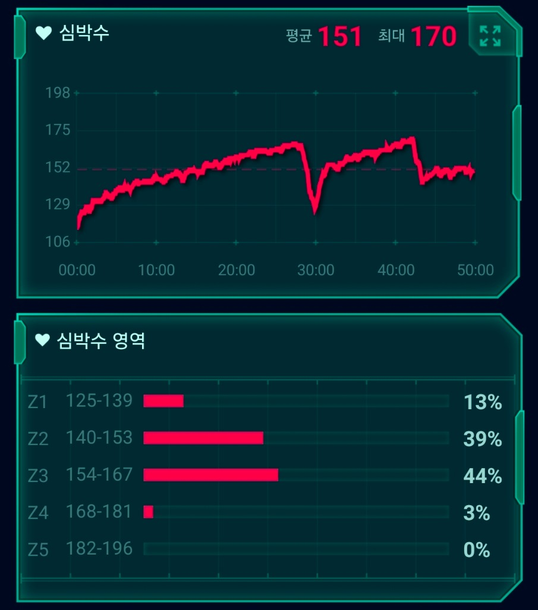

심박수 5단계(Zone 1~5) 쉽게 이해하기: 내 몸에 맞는 훈련 강도 찾기
- 예전에 많이 쓰던 "최대심박수 = 220 - 나이" 공식은 사람마다 차이가 커서 나에게 딱 맞지 않을 수 있습니다.
- 중요한 건 두 가지 경계선입니다. 편안하게 대화하며 뛰는 상한선(LT1)과 숨이 턱까지 차기 시작하는 경계선(LT2)을 구분하면 됩니다.
- 실력이 늘수록 매번 숨이 넘어가게 뛰기보다, 가벼운 달리기(Zone 2)와 적당히 힘든 달리기(Zone 3~4)를 나눠서 뜁니다.
1. 왜 '220 - 나이' 공식이 잘 안 맞을까?
예전에는 심박수를 계산할 때 흔히 220 - 나이 공식을 썼습니다.
예를 들어 40살이라면 최대 심박수를 180으로 보고, 거기에 맞춰 달리는 속도를 정하는 식이었습니다.
하지만 실제로 측정해 보면 같은 40살이라도 심장이 원래 천천히 뛰는 사람(최대 165)과 빠르게 뛰는 사람(최대 195)의 차이가 아주 큽니다. 이걸 모두 똑같이 180으로 계산하면, 어떤 사람은 너무 힘들게 뛰다 지치고 어떤 사람은 운동이 너무 약하게 됩니다.
그래서 요즘 스마트워치와 러너들은 나이 공식 대신, 내 몸이 숨차고 힘들어지는 두 번의 경계선(LT1, LT2)을 기준으로 심박수를 5단계(Zone 1~5)로 나눠서 봅니다.
2. 달릴 때 몸이 바뀌는 두 번의 경계선: LT1과 LT2
달리는 속도를 조금씩 올리다 보면, 몸이 힘들어지는 느낌이 확 달라지는 두 지점이 있습니다.
🏃 속도에 따른 몸 상태 3단계
- 1단계: 아주 편안한 구역 (Zone 1 ~ Zone 2): 몸에 쌓인 지방을 주로 태우며 달립니다. 옆 사람과 긴 문장으로 편하게 대화할 수 있고 오래 뛰어도 덜 지칩니다.
- 첫 번째 경계선 (LT1, 유산소 경계): "아, 이제부터는 마냥 편하지만은 않고 조금 운동하는 느낌이 나네" 싶은 지점입니다. 여기서부터 몸이 탄수화물 에너지를 더 많이 쓰기 시작합니다.
- 2단계: 적당히 숨찬 구역 (Zone 3): 숨은 좀 차지만 몸이 피로 물질을 바로바로 치워가며 꽤 오래 버틸 수 있는 속도입니다. 풀코스 마라톤을 뛸 때 많이 쓰는 속도입니다.
- 두 번째 경계선 (LT2, 젖산 경계): 몸이 피로 물질을 치우는 속도보다 쌓이는 속도가 빨라지기 시작하는 한계선입니다. 보통 전력으로 약 1시간 정도 버틸 수 있는 빠른 속도(10km~하프 대회 속도)입니다.
- 3단계: 숨이 턱 끝까지 차는 구역 (Zone 4 상단 ~ Zone 5): 길게 유지할 수 없는 전력 질주 구간입니다. 몇 분 안에 다리가 무거워지고 숨이 가빠집니다.
3. 스마트워치 심박수 5단계(Zone 1~5) 한눈에 보기
4. 🏃 실전 달리기 기록: 9.18km를 뛰며 심박수 살펴보기

▲ 9.18km 실내 러닝머신 기록: 30분 달린 뒤 잠시 쉬었다가 다시 달린 모습
💡 직접 뛰며 느낀 3가지 포인트
- Zone 5(전력 질주)는 0%로 비워두기: 처음에는 숨이 턱 끝까지 차올라야 운동한 기분이 들었습니다. 하지만 매번 Zone 5까지 몰아붙이면 며칠 동안 피로가 안 풀리더군요. 이번 달리기에서는 Zone 5를 0%로 두고, Zone 2(39%)와 Zone 3(44%)에서 80% 이상 머물도록 속도를 조절했습니다. 이렇게 뛰니 다음 날 다리가 훨씬 가벼웠습니다.
- 잠시 멈췄을 때 심박수가 내려가는 속도 확인하기: 30분을 달리고 속도를 늦췄을 때 심박수가 168에서 120대까지 빠르게 떨어졌습니다. 달리기를 멈췄을 때 심박수가 빨리 내려온다면, 오늘 내 몸이 그 속도를 무리 없이 잘 감당했다는 신호입니다.
- Zone 4(3%)는 마지막에만 살짝: 가장 높은 심박수(170)는 막판 42분 지점에서 잠깐 나왔습니다. 처음부터 무리하게 높은 심박수로 달리기보다, 편한 구간에서 오래 뛰다가 마지막에만 잠깐 힘을 내는 편이 부상 없이 오래 달리는 데 좋았습니다.
5. 내 수준에 맞는 일주일 심박수 배분 가이드
추천 비중: Zone 1~2 (85~90%) / Zone 3 (10~15%)
처음에는 심장과 다리가 달리기에 적응할 시간이 필요합니다. 숨이 너무 가쁘다면 걷기를 섞거나 속도를 늦춰서 편안한 Zone 2 느낌부터 익혀보세요.
추천 비중: Zone 2 (75%) / Zone 3 (15%) / Zone 4 (10%)
대부분의 거리는 편안한 조깅으로 채우고, 일주일에 한 번 정도만 조금 빠르게(Zone 4) 달리며 체력을 끌어올리는 단계입니다.
추천 비중: Zone 1~2 (80%) / Zone 3~4 (15%) / Zone 5 (5%)
기록 단축이 목표라도 전체 거리의 80%는 낮은 심박수로 편안하게 달려야 합니다. 빠른 훈련도 무리하게 끝까지 밀어붙이기보다 정해진 강도를 지키는 게 안전합니다.
📚 참고 학술 논문 및 공식 가이드라인
- Seiler, K. S., & Kjerland, G. Ø. (2006). Quantifying training intensity distribution in elite endurance athletes: is there evidence for an “optimal” distribution? Scandinavian Journal of Medicine & Science in Sports.
- Seiler, S. (2010). What is best practice for training intensity and duration distribution in endurance athletes? International Journal of Sports Physiology and Performance.
⚡ 내 기록에 딱 맞는 Zone 1~5 속도를 알고 싶다면?
RunAnalyz 종합 계산기에 최근 5km/10km 완주 시간과 심박수를 입력하면, 스포츠 의학 공식 기반의 4대 훈련 속도와 심박존을 1초 만에 자동 처방합니다.
⚡ 내 맞춤 심박수 & 페이스 무료 진단하기⚡ 내 기록에 딱 맞는 5대 훈련 페이스는?
지금 5k, 10k 또는 하프 기록을 입력하면 나만의 조깅(E)·마라톤(M)·템포런(T)·인터벌(I) 페이스와 VDOT이 1초 만에 자동 계산됩니다.
⚡ 1초 VDOT 페이스 & 완주 예측 계산기 실행하기 ›